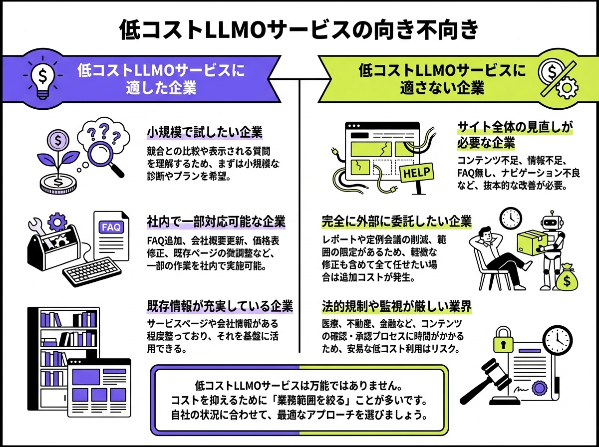
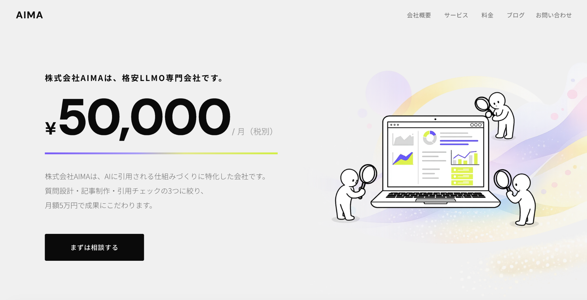
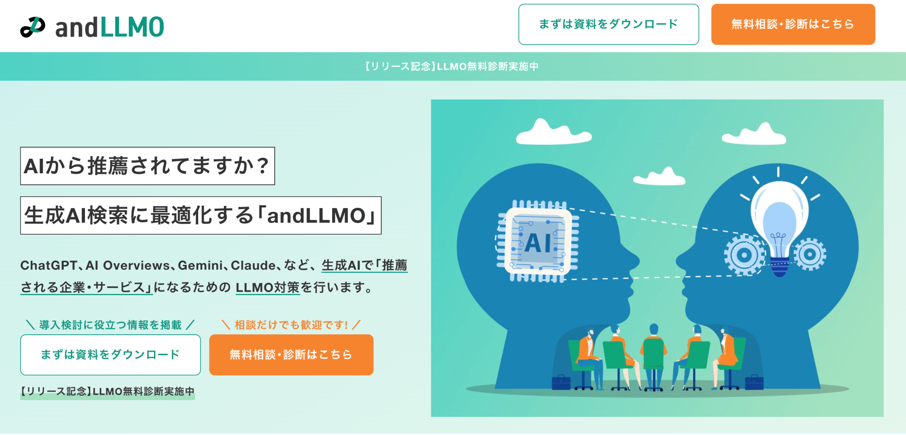
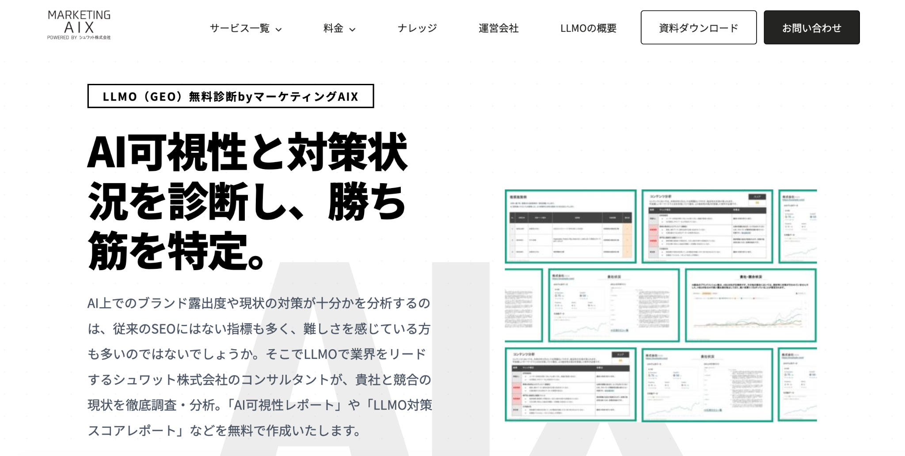
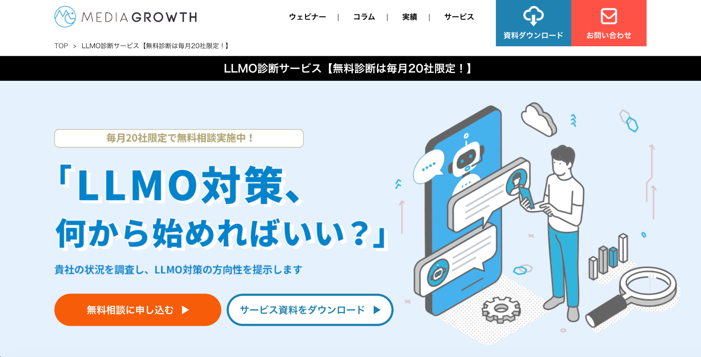
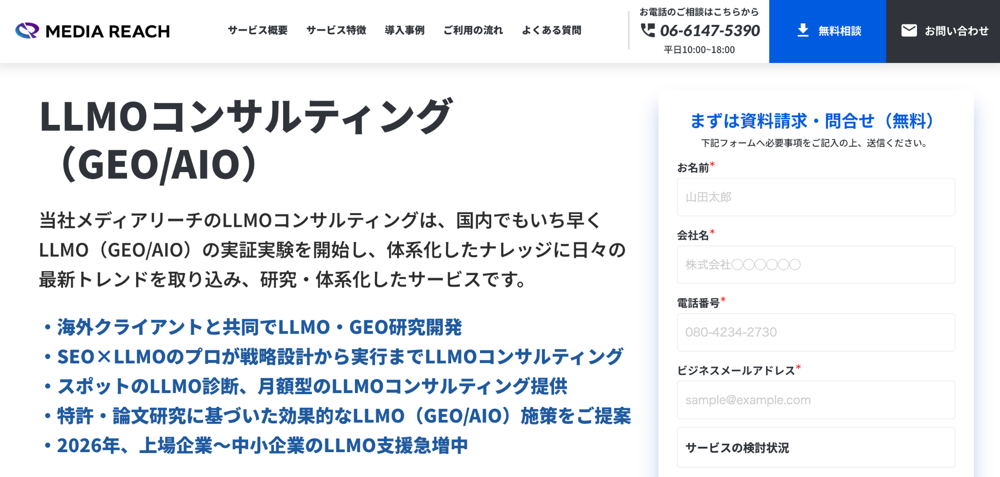
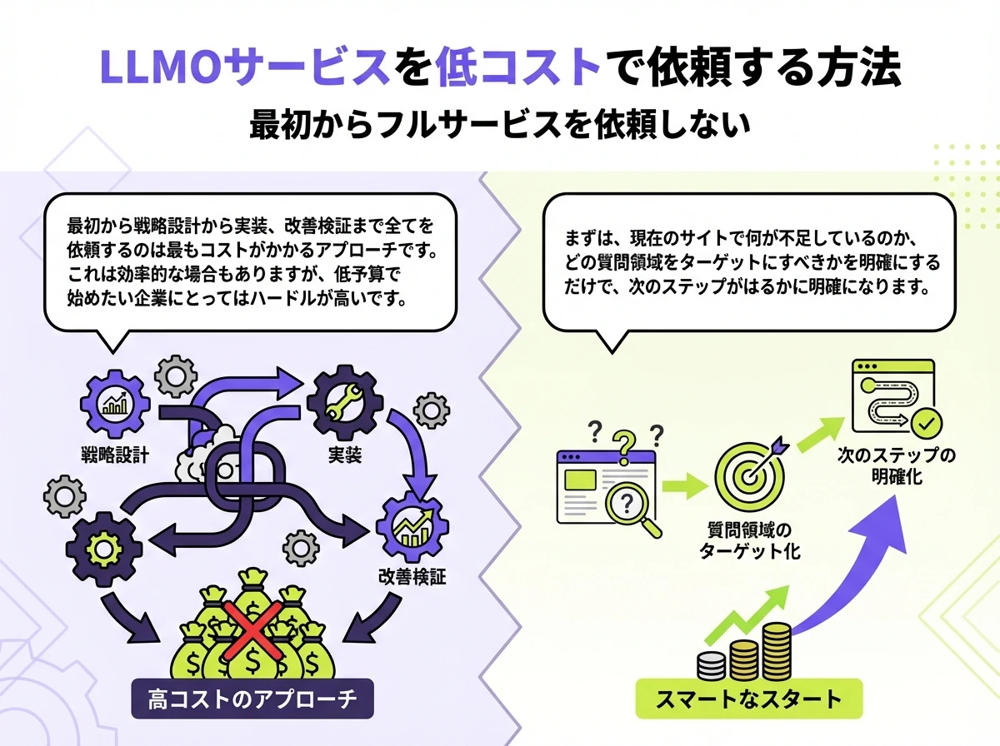

格安LLMO代行会社おすすめ5選【2026年版】｜料金相場と安く依頼するコツ

LLMO対策は格安の代行会社を活用する方法もあります。ただし、料金が安いだけで依頼先を決めると、必要な施策が含まれておらず、思うように成果につながらないこともあります。大切なのは、価格の安さそのものではなく、限られた予算の中で何を優先して進めるかを整理することです。
この記事では、格安LLMO代行の費用相場、向いている会社・向いていない会社、比較するときのポイント、おすすめの代行会社5選をわかりやすく解説します。これからLLMO対策を外注したい方が、自社に合った依頼先を判断しやすくなるよう整理しました。
目次

格安LLMO代行を探している人が最初に知っておきたいこと
LLMO代行を探していると、どうしても月額料金の安さに目が向きがちです。ただ、実際には「安い会社を選ぶこと」そのものが重要なのではなく、限られた予算の中で何を優先して進めるかを整理することが大切です。
ここではまず、格安LLMO代行を検討する前に押さえておきたい基本を整理します。
格安でもLLMO代行は依頼できる
LLMO代行は、初期診断だけのスポット支援や、小規模に始めやすい月額プランを用意している会社もあります。
たとえば、株式会社AIMAは月額5万円のLLMO支援を案内しており、株式会社メディアグロースは毎月20社限定の無料診断や単発30万円からのLLMO診断を公開しています。そのため、最初から大きな予算をかけられない会社でも、まずは現状把握や優先順位付けから始めることは十分可能です。
特に、すでに自社サイトがあり、サービスページや会社概要などの基本情報がある程度そろっている会社であれば、ゼロから作り直すよりも低コストで着手しやすくなります。
ただし「安い＝お得」とは限らない
一方で、料金が安いことだけを理由に依頼先を決めるのは危険です。格安プランの中には、診断やレポート提出が中心で、実際の修正作業は自社対応になっているものもあります。見た目の月額は安くても、あとから別料金が必要になれば、結果として費用が膨らむこともあるでしょう。
また、LLMOでは「どの質問で出るか」「どのURLが引用されるか」といった設計が重要です。ここが曖昧なまま記事だけ増やしても、AIに取り上げられやすい状態にはなりません。
重要なのは価格ではなく支援範囲と優先順位の設計
LLMO対策で本当に見るべきなのは「その会社が何をどこまで支援してくれるのか」です。質問設計、比較記事やFAQの整備、サービスページの見直し、会社情報の整理、出現確認や引用確認まで含むのかによって、同じ月額でも中身は大きく変わります。
LLMO対策の基本でも触れたように、Googleも、AI検索向けに特別な追加要件があるわけではなく、SEOの基本的なベストプラクティスはAI機能でも引き続き有効だと案内しています。
SEO のベスト プラクティスは、引き続き Google 検索の AI 機能でも有効です。AI による概要や AI モードにコンテンツが表示されるための追加の要件はなく、別途特別な最適化を行う必要もありません。
また、組織の構造化データは、Googleが組織情報を理解しやすくする手段として説明されています。
つまり、裏技のような施策を探すよりも、情報の正確さ、ページ構成のわかりやすさ、機械が読み取りやすい形での整理といった土台を整えることが先です。だからこそ、格安で依頼する場合ほど「まず何から直すか」を明確にし、限られた予算を重要な箇所に集中させる設計が欠かせません。
参考：株式会社メディアグロース｜LLMO診断サービス【無料診断は毎月20社限定！】
参考：Google Search Central｜Organization structured data
格安LLMO代行の費用相場
格安LLMO代行の費用相場は、依頼する範囲によってかなり変わります。LLMO支援といっても「現状診断だけを行う会社」「月額で伴走する会社」「記事制作まで含める会社」があり、同じLLMO代行でも中身が違うからです。
そのため、価格を見るときは「月額が安いか」だけではなく、何が含まれているのかを必ず確認しましょう。
| 依頼パターン | 料金の目安 | 主な内容 | 向いている使い方 |
|---|---|---|---|
| 診断だけ依頼 | 無料〜30万円前後 | 現状調査、競合比較、優先順位整理 | 継続契約前の入口 |
| 小規模な月額伴走 | 月額5万〜10万円台＋施策費用 | 質問設計、記事制作、出現確認、改善提案 | 小さく始めて改善を回したい会社 |
| 実装・記事制作を広く含む支援 | 月額30万円〜 / 記事1本10万円〜 | 戦略設計、PR、モニタリング、記事制作 | 設計から実行まで広く任せたい会社 |
診断だけ依頼する場合の費用感
最も小さく始めやすいのが、現状診断や競合比較だけを依頼するパターンです。自社がどのAIでどの程度言及されているのか、比較文脈でどの競合が強いのか、どの質問から優先して対策すべきかを把握する目的で使われることが多く、まだ本格的な継続契約を結ぶ前の入口として使いやすい進め方です。
実際に、株式会社メディアグロースは無料のお試しプランと、30万円からの単発診断プランを公開しています。無料プランでは簡易的な比較、単発プランではAI Overviews・ChatGPT・Gemini・Perplexityなどを含む流入や言及状況の調査、比較文脈の分析、方針の示唆出しまで含まれています。
月額で伴走してもらう場合の費用感
継続的に伴走してもらう場合は、月額5万円台からスタートできる会社もありますが、支援範囲には大きな差があります。たとえば、株式会社AIMAは月額5万円で、質問設計・記事制作・引用チェックに絞った支援を案内しています。レポートや定例会議を省き、必要な作業に集中することで価格を抑えているのが特徴です。
一方で、サイト全体の改修やPR、細かな定例運用まで含めてほしい場合は、同じ「月額支援」でも費用が上がりやすくなります。公開料金だけを見て比較するのではなく、その月額で何本作るのか、何を直すのか、誰が実装するのかまで確認しないと、正確な比較にはなりません。
記事制作込みの場合の費用感
記事制作まで含める場合は、月額プランに含まれているケースと、記事単価で別計上されるケースがあります。ここを混同すると「月額は安いのに、結局高くなった」というズレが起こりやすくなります。
たとえば、メディアリーチはLLMO記事制作を1本10万円（税込11万円）からと公開しています。これは、生成AIで引用されやすいことも意識した記事制作の料金で、最低本数の条件もあります。つまり、記事を数本まとめて依頼する場合は、月額費用とは別にまとまった予算が必要になる可能性があります。
一方で、AIMAのように月額プランの中に記事制作を含める設計もあります。この場合は予算管理がしやすい反面、毎月の制作本数や対応範囲に上限があるかを確認しておきましょう。記事制作込みの費用感を見るときは、「月額に含まれるのか」「1本ごとの追加費用なのか」を最初に切り分けて確認するのが安全です。
参考：株式会社メディアグロース｜LLMO診断サービス〖無料診断は毎月20社限定！〗
参考：株式会社メディアリーチ｜LLMOコンサルティング（GEO/AIOコンサルティング）
格安LLMO代行が向いている会社・向いていない会社

格安LLMO代行は、すべての会社に同じように向いているわけではありません。なぜなら、低価格で提供されている支援は、多くの場合「やることを絞る」ことで料金を抑えているからです。
ここでは、どんな会社が格安LLMO代行と相性が良いのか、逆にどんな会社は最初から別の選び方をしたほうがいいのかを整理します。
格安LLMO代行が向いている会社
格安LLMO代行が向いているのは、まず「小さく試したい会社」です。いきなり大きな月額契約を結ぶのではなく、まずはどの質問で自社が出る可能性があるのか、競合と比べて何が足りないのかを把握したい会社であれば、低価格プランや診断系サービスと相性が良いです。
また、社内である程度動ける会社も向いています。たとえば、FAQの追加、会社概要の更新、料金表の修正、既存ページの軽微な調整などを自社で進められるなら、外注先には質問設計や優先順位付け、記事制作の一部だけを依頼する形が取りやすくなります。
さらに、すでにサービスページや会社情報がある程度整っている会社も、格安プランと相性が良いです。
格安LLMO代行が向いていない会社
一方で、格安LLMO代行が向いていないのは、サイト全体の見直しが必要な会社です。たとえば、サービスページの内容が薄い、会社情報が不足している、FAQがない、導線が整理されていないといった状態だと、質問設計や記事制作だけでは成果につながりにくくなります。
また、社内でまったく動けない会社も、格安プランとは相性があまり良くありません。低価格のサービスは、レポートや定例会議を減らしたり、対象範囲を絞ったりすることで成立していることがあります。そのため、外注先に完全に丸投げしたい、細かな修正もすべて任せたいという会社だと、結局は追加費用がかかりやすくなります。
法規制や監修体制が重い業界も注意が必要です。医療、不動産、金融のように、表現チェックや承認フローに時間がかかる業界では、記事を作ればすぐ公開できるわけではありません。こうした業界では、単に価格が安いかどうかより、監修や社内確認を前提にした進行に慣れているかどうかを見たほうが安全です。
格安LLMO代行を選ぶときの比較ポイント
格安LLMO代行を比較するときに、月額料金の安さだけで判断するのは危険です。なぜなら、同じ「LLMO支援」と書かれていても、質問設計までなのか、記事制作まで含むのか、FAQや構造化の見直しまで対応するのか、AIでの出現確認まで行うのかで、実際の支援内容が大きく変わるからです。
価格差だけを見るのではなく、何をどこまでやるのかを分解して確認しましょう。ここでは格安LLMO代行を選ぶときの比較ポイントをいくつか紹介します。
記事制作だけで終わらないか
LLMO対策では、記事制作そのものは重要ですが、それだけで完結するとは限りません。AIに出やすくするには、どんな質問で自社が推薦されたいのかを先に決め、その質問に対してどのページで受けるのかまで整理しましょう。ここが曖昧なまま記事だけを増やしても、引用されやすい状態にはつながりにくいです。
AIMAは「質問の特定・記事の制作・引用の確認」の3つを成果に直結する工程として示していますし、andLLMOも5ステップの最初に「AIで想定される質問の選定」を置いています。
つまり、格安プランを選ぶときでも、記事制作だけで終わらず、質問設計や確認工程まであるかは見ておくべきです。
サービスページやFAQまで見てくれるか
比較記事やコラムだけでなく、自社のサービスページやFAQまで視野に入れてくれるかも重要です。Googleは、AI機能においても既存のSEOの基本が有効だと案内しており、重要な情報をテキストで読めるようにすること、構造化データがページ上の見える内容と一致していることなどを挙げています。つまり、AI向けだけの特別な裏技よりも、公式ページ側の情報整理が土台になります。
andLLMOも、FAQやSchema.org、サイト構造の方針設計を支援内容として明示しています。記事だけを外に増やすのではなく、公式サイト内の情報の受け皿まで整える視点がある会社のほうが、結果として費用対効果が出やすいです。
会社情報や実在性の整理まで対応できるか
LLMOでは、記事内容だけでなく、会社そのものの情報が整理されているかも無視できません。GoogleはOrganization構造化データについて、組織の管理情報を理解しやすくし、検索結果上でほかの組織と区別しやすくするための手段だと説明しています。住所、連絡先、ロゴ、外部プロフィールなどの情報が整理されているほど、検索エンジンやAIにとって理解しやすい状態を作りやすくなります。
もちろん、格安プランですべてを細かく実装してくれるとは限りません。ただ、少なくとも「どこが弱いのか」を見て、会社概要や運営者情報、外部プロフィールの整備まで視野に入れて助言してくれる会社のほうが安心です。
AIでの出現確認や引用確認を行うか
LLMO対策は、やったかどうかではなく、実際にAI回答でどう扱われたかを見て改善することが重要です。なぜなら、記事やFAQを追加しただけでは、本当にAIに参照される状態になったのかは分からないからです。どのAIで、どの質問に対して、どのURLが出ているのかを確認できなければ、何が効果につながったのかも、次にどこを改善すべきかも判断しにくくなります。
そのため、AIでの出現確認や引用確認を支援範囲に含めているかは大きな比較ポイントになります。AIMAは週次モニタリングを含むと案内しており、andLLMOも各AIでの推薦状況をチェックする工程を明示しています。
レポート中心ではなく実装まで支援するか
診断資料やレポートが丁寧でも、実際にページや導線が変わらなければ成果は出にくいです。とくに格安プランでは、どこまでが提案で、どこからが実装なのかが曖昧なことがあります。そのため、FAQ追加、比較記事制作、構造見直し、ページ強化など、具体的にどこまで動いてくれるのかを確認したほうが安全です。
andLLMOは、改善方針の設計だけでなく、施策の実施まで含めて案内しています。一方で、AIMAは成果に直結する3つの作業に絞る設計です。どちらが良い悪いではなく、自社が必要としている範囲に合っているかを見極めることが大切です。
料金表と作業範囲が明確か
価格を見るときは、月額だけでなく、追加費用の条件まで確認しましょう。andLLMOは、月額10万円のサポート費用に加えて、LLMO設計、構造化マークアップ実装、外部メディア掲載、プレスリリース配信、SEO記事制作などの施策費用を公開しています。ここまで明確に分かれていると、どこまで頼むと総額がいくらになるのかを判断しやすくなります。
一方で、料金の入り口だけが書かれていて、実際の作業範囲が見えないサービスもあります。格安だから安心ではなく、「何本作るのか」「何を直すのか」「追加費用が出るのはどこか」がわかる会社のほうが比較しやすいです。
契約期間の縛りが強すぎないか
LLMOは公開してすぐ結果が安定する施策ではないため、一定期間の継続は現実的です。ただし、長すぎる契約縛りは、相性が合わなかったときのリスクにもなります。AIMAは最低契約期間なしで、1か月単位でいつでも解約可能と案内しています。こうした条件が事前に見える会社のほうが、導入判断はしやすいです。
比較時は、最低契約期間だけでなく、途中で施策内容を見直せるか、解約後に何が残るかまで確認しておくと安心です。
参考：Google Search Central｜AI features and your website
参考：Google Search Central｜Organization structured data
格安で依頼しやすいLLMO代行会社5選
LLMO対策は、質問設計、記事制作、FAQ整備、構造整理、出現確認など、会社によって対応範囲が大きく異なります。まずは各社の料金感や支援範囲を一覧で比較し、そのうえで詳細を確認していくと、自社に合う依頼先を判断しやすくなります。
| 会社 | 料金の目安 | 主な支援内容 | 向いている会社 | 強み | 注意点 |
|---|---|---|---|---|---|
| 株式会社AIMA | 月額5万円（税別） | 質問設計・記事制作・引用チェック | 小さく始めたい会社／費用を抑えて進めたい会社 | 価格がわかりやすく、支援内容もシンプル | 細かい分析や定例会議まで求める会社には合わない場合がある |
| andmedia株式会社 | 月額10万円＋施策費用 | 質問設計・推薦状況確認・構造改善方針設計・実施支援 | BtoB・高単価商材 | 設計から改善実施まで段階的に進めやすい | 月額以外に設計・構造化実装・記事制作などの追加費用が発生する |
| シュワット株式会社 | 無料診断あり | AI可視性レポート・対策スコアレポート・改善提案 | まず現状把握から始めたい会社 | 無料で比較や診断を受けやすい | 実行支援は別途相談になるため、診断後の進め方確認が必要 |
| 株式会社メディアグロース | 無料診断／短期施策20万円〜（税別）／単発診断30万円〜 | 出現状況調査・競合比較・方針提案・短期施策 | 継続契約の前に立ち位置や優先順位を整理したい会社 | 無料または単発で始めやすい | 実装まで任せる場合はプラン範囲を個別確認したい |
| 株式会社メディアリーチ | 月額30万円（税込33万円）〜 / 記事1本10万円（税込11万円）〜 | 戦略設計・コンテンツ改善・PR支援・モニタリング・記事制作 | 設計から実行までしっかり支援を受けたい会社 | 支援範囲と価格の関係が比較的わかりやすい | 格安特化ではなく、中価格帯以上の予算感を見ておく必要がある |
それぞれの特徴を詳しく解説します。
株式会社AIMA

| 項目 | 内容 |
|---|---|
| 料金の目安 | 月額5万円（税別） |
| 主な支援内容 | 質問設計・記事制作・引用チェックを中心に対応 |
| 向いている会社 | まずは小さく始めたい会社／費用を抑えて実務を進めたい会社 |
| 強み | 月額の安さがわかりやすく、支援内容もシンプル |
| 注意点 | 細かい分析やレポート、ミーティングなどを求める会社には向いていない |
AIMAは、月額5万円（税別）のLLMO支援を前面に打ち出している会社です。質問設計・記事制作・引用チェックの3つに絞ることで、低価格でも取り組みやすい形をつくっています。初期費用なし、最低契約期間なし、1か月単位でいつでも解約可能という条件も公開されており、料金と契約条件が見えやすい点は大きな安心材料です。
特に、すでに自社サイトがあり、まずは小さく試したい会社に向いています。レポートや定例会議よりも、必要な作業を進めることを重視した設計なので、費用を抑えつつ実務を進めたい会社と相性が良いです。一方で、サイト全体の大規模改修や広範なPRまでまとめて任せたい場合は、他社との比較も必要になります。
andmedia株式会社

| 項目 | 内容 |
|---|---|
| 料金の目安 | 月額10万円＋施策費用 |
| 主な支援内容 | 質問設計・各AIでの推薦状況確認・構造改善方針設計・実施支援 |
| 向いている会社 | BtoBや高単価商材を扱う会社 |
| 強み | 設計から改善実施まで段階的に進めやすい |
| 注意点 | 月額費用とは別に、設計・構造化実装・記事制作などの追加費用が発生する |
andmediaが提供するandLLMOは、月額10万円のサポート費用を公開しており、加えて設計費用や構造化マークアップ実装、外部メディア掲載、プレスリリース配信、記事制作などを施策ごとに追加できる設計です。質問設計、各AIでの推薦状況チェック、外部評価分析、FAQやSchema.orgなどの構造面の方針設計、改善実施まで5ステップで整理されているため、何をどう進めるのかが比較的わかりやすいサービスです。
BtoBや高単価商材と相性が良いことも明示されており、比較検討フェーズでの推薦獲得を狙う企業には検討しやすい会社です。価格の入口はAIMAより高いものの、設計・レポート・進行支援を含む伴走型としては比較しやすく、施策を段階的に広げやすい点が強みです。
シュワット株式会社

| 項目 | 内容 |
|---|---|
| 料金の目安 | 無料診断あり（毎月25社限定） |
| 主な支援内容 | AI可視性レポート・LLMO対策スコアレポート・改善ロードマップ提示 |
| 向いている会社 | まず現状把握から始めたい会社／提案の質を見て判断したい会社 |
| 強み | 無料で競合比較や現状診断を受けやすい |
| 注意点 | 実行支援は別途有料のため、診断後の進め方まで確認しておきたい |
シュワットは、毎月25社限定のLLMO無料診断を案内しており、まずは現状のAI可視性や競合比較を知りたい会社にとって入りやすい会社です。無料診断では「AI可視性レポート」や「LLMO対策スコアレポート」を作成すると案内しており、何から着手すべきかを整理する入口として使いやすいです。
公開ページでは、エンタープライズ企業を中心とした支援実績にも触れており、無料診断から始めて本格支援に進む導線が用意されています。現時点で料金表を大きく前面に出しているタイプではありませんが、「まず診断だけ受けたい」「提案の質を見てから判断したい」という会社には相性が良い候補です。
株式会社メディアグロース

| 項目 | 内容 |
|---|---|
| 料金の目安 | 無料お試しプラン／30万円〜（税別）の単発診断 |
| 主な支援内容 | AI回答での出現状況調査・競合比較・方針提案 |
| 向いている会社 | 継続契約の前に、立ち位置や優先順位を整理したい会社 |
| 強み | 無料から入りやすく、単発で診断だけ依頼しやすい |
| 注意点 | 施策実行は含まれず別見積になるため、実装まで任せたい会社は範囲確認が必要 |
メディアグロースは、毎月20社限定のLLMO無料診断と、単発30万円からのLLMO診断を公開しています。無料プランでは簡易的な比較、有料プランではAI Overviews・ChatGPT・Gemini・Perplexity・Google検索を含むAI流入や認知経路の分析、競合比較、方針提案まで含めています。まず立ち位置を明確にしたい会社にとって、診断起点で入りやすい会社です。
また、短期施策20万円（税別）からという案内もあり、継続支援の前に小さく試しやすいのも特徴です。月額5万円や10万円の継続支援とはタイプが違いますが、「安い月額で長く契約する」より「まず診断と優先順位整理だけ外注したい」という会社にとっては、十分に現実的な選択肢になります。
株式会社メディアリーチ

| 項目 | 内容 |
|---|---|
| 料金の目安 | 月額30万円（税込33万円）〜／記事制作1本10万円（税込11万円）〜 |
| 主な支援内容 | LLMO戦略設計・コンテンツ改善・PR支援・モニタリング・記事制作 |
| 向いている会社 | 設計から実行までしっかり支援を受けたい会社 |
| 強み | 支援範囲と価格の関係が比較的わかりやすい |
| 注意点 | 格安特化というより中価格帯なので、最低予算はやや高めに見ておきたい |
メディアリーチは、格安特化というより中価格帯寄りですが、料金の目安を比較的明確に公開している会社として比較対象に入れておきたい存在です。サービス開始時の案内では、LLMO Auditが20万円から、LLMOコンサルティングが月額30万円から、LLMO記事制作が1本10万円（税込11万円）からと示されています。料金の入り口と支援内容の関係を把握しやすいため、低価格帯の会社との違いを見たいときに参考になります。
「格安で始めたい」というより、「ある程度しっかり設計から実装まで見たいが、相場感も知りたい」という会社に向いています。安い会社だけを見ると比較軸が狭くなるため、あえてこうした中価格帯の会社もあわせて見ることで、月額5万〜10万円台の支援がどこまで含んでいるのか判断しやすくなります。
参考：株式会社メディアリーチ｜LLMOコンサルティング（GEO/AIO支援）
LLMO代行を格安で依頼する方法
LLMO代行を格安で依頼したいなら、最初から全部をフルで任せる前提で考えないほうが現実的です。LLMO支援は診断、質問設計、記事制作、FAQ整備、会社情報の見直し、出現確認や引用確認など、やろうと思えば対象範囲が広がりやすいからです。
支援範囲を広げるほど費用は上がるため、予算を抑えたい場合は「外注する部分」と「自社で対応する部分」を切り分ける発想が欠かせません。ここではLLMO代行を格安で依頼する方法をいくつか紹介します。
最初からフル代行にしない

もっとも費用が膨らみやすいのは、戦略設計から実装、改善確認までを最初から全部まとめて依頼するケースです。もちろん、そのほうが進みやすい場面もありますが、格安で始めたい会社にとってはハードルが高くなります。まずは今のサイトで何が不足しているのか、どの質問領域を狙うべきなのかだけを整理できれば、次の一手はかなり明確になります。
たとえばAIMAは、質問設計・記事制作・引用チェックの3つに絞ることで月額5万円を実現しています。これは、成果に直結しやすい部分に作業を限定する発想です。格安で依頼したい場合は、この考え方をそのまま自社側にも当てはめて、「全部」ではなく「今必要な部分だけ」を頼む意識を持つと、無駄な費用を抑えやすくなります。
診断と優先順位付けだけ外注する
最も小さく始めやすいのは、診断と優先順位付けだけを外注する方法です。自社がどのAIで言及されているのか、競合はどこで強いのか、どのページから直すべきなのかを把握できれば、その後の実装は社内でも進めやすくなります。いきなり月額伴走を入れなくても、ここが整理できるだけでかなり動きやすくなります。
メディアグロースは毎月20社限定の無料診断を公開しており、さらに単発診断サービスも案内しています。シュワットも毎月25社限定の無料診断を提供しており、AI可視性や競合比較のレポート作成を打ち出しています。こうした無料診断や単発診断を入口にすると、相性や提案の質を見ながら次の判断がしやすくなります。
参考：株式会社メディアグロース｜LLMO診断サービス【無料診断は毎月20社限定！】
参考：シュワット株式会社｜LLMO（GEO）無料診断 by マーケティングAIX
記事制作だけ一部外注する
自社でサービスページやFAQを更新できるなら、記事制作だけを一部外注する方法もあります。比較記事、FAQ記事、導入ガイドなど、AIに引用されやすいテーマだけを外部に任せ、公式ページ側の情報更新は社内で進める形です。この分け方なら、丸ごと依頼するよりも費用を抑えやすくなります。
ただし、記事制作は本数次第で予算が大きく変わります。メディアリーチはLLMO記事制作を1本10万円（税込11万円）から、最低10本からと公開しています。つまり、記事だけ外注する場合でも、必要本数を見誤ると想定以上の予算になることがあります。どのテーマを外注するのか、何本必要なのかを先に絞ることが重要です。
参考：株式会社メディアリーチ｜LLMOコンサルティング（GEO/AIO）
自社でできる部分と外注する部分を分ける
格安で依頼したい会社ほど、この切り分けが重要です。たとえば、会社概要の更新、サービスページへの追記、FAQの追加、料金表の修正などは、自社で対応しやすいことが多いです。一方で、競合比較、質問設計、AIごとの出現確認、記事構成の最適化などは、外部の知見を借りたほうが早い場面があります。
GoogleもAI機能向けに、重要コンテンツをテキストで提示すること、内部リンクで見つけやすくすること、構造化データを表示内容と一致させることなどを基本として挙げています。こうした土台づくりは社内でも着手しやすいため、難易度の高い設計だけを外注し、更新作業は社内で回す形にすると、コストを抑えながら前に進めやすくなります。
参考：Google Search Central｜AI features and your website
「何を外注しないか」を決める
格安で依頼するときに意外と大事なのが、「何を頼むか」より先に「何を頼まないか」を決めることです。たとえば、社内で更新できるページ修正まで全部外注に含めると、費用はすぐに膨らみます。逆に、質問設計、競合分析、記事構成、AIでの確認など、自社でやるには時間がかかる部分だけを外に出せば、費用対効果は上がりやすくなります。
格安で依頼するコツは、価格の安い会社を探すことだけではありません。自社で回せる部分を見極めたうえで、外注の範囲を絞ることこそが、結果としてもっとも現実的なコスト削減につながります。
LLMO代行を格安で依頼するときの進め方
格安でLLMO代行を依頼するときは、最初に目的と優先順位をはっきりさせることが重要です。価格を抑えられる会社を選んでも、何を目指すのかが曖昧だと、記事だけ増えて終わる、改善すべきページがわからないまま進む、といった状態になりやすくなります。
ここではLLMO代行を格安で依頼するときの進め方を紹介します。
1.目的を整理する
最初に決めたいのは、「AIに自社名を出したい」のか、「比較系の質問で引用されたい」のか、「特定サービスの問い合わせを増やしたい」のかです。この目的によって、整えるべきページも、外注するべき範囲も変わります。
AIMAも、最初に質問設計を置いているように、どんな質問で自社が出るべきかを先に決めることを重視しています。目的が曖昧なままだと、記事本数だけが増えても成果につながりにくいため、最初に狙う質問領域を絞ることが大切です。
2.現状を共有する
依頼前には、今どのAIで自社名やサービス名がどの程度出ているか、主要な競合が誰か、どのページが主力ページなのかを整理しておくと、提案の精度が上がります。外注先に丸投げするより、自社側でも最低限の現状把握をしておくほうが、限られた予算を無駄にしにくいです。
メディアグロースの診断サービスは、AI Overviews・ChatGPT・Gemini・Perplexity・Google検索を含む複数チャネルでの流入や認知経路の分析を案内しています。こうした視点を使って、今どこで弱いのかを先に見ておくと、依頼内容を絞りやすくなります。
参考：株式会社メディアグロース｜LLMO診断サービス【無料診断は毎月20社限定！】
3.提案内容と対応範囲を確認する
提案を受けたら、何を作るのか、何を直すのか、誰が実装するのかを必ず確認しましょう。格安プランほど、対象範囲を絞ることで料金を下げていることが多いため、ここが曖昧なまま進めると、あとから追加費用が増えやすくなります。
たとえば、AIMAは質問設計・記事制作・引用チェックに絞っている一方、メディアリーチは月額30万円からで、戦略設計、コンテンツ改善、ナレッジベース構築、PR支援、モニタリングなどを含むと案内しています。同じLLMO支援でも範囲がかなり違うため、金額だけではなく支援内容の差を確認しておくことが重要です。
参考：株式会社メディアリーチ｜LLMOコンサルティング（GEO/AIO）
4.優先順位を決めて実装する
格安で進める場合は、最初から全ページを触ろうとしないことが大切です。サービスページ、FAQ、会社情報、比較記事などの中から、もっとも影響の大きい部分を先に整えるほうが、限られた予算でも成果につながりやすくなります。
Googleは、AI機能に向けても重要な情報をテキストで見つけやすくすること、内部リンクでたどりやすくすること、構造化データをページ上の内容と一致させることなどを案内しています。つまり、まずは主要ページの情報整理から優先して進めるのが基本です。
参考：Google Search Central｜AI 機能とウェブサイト
5.出現確認・引用確認・改善を繰り返す
LLMO対策で重要なのは、施策を入れたあとに「どのAIで自社名が出るようになったのか」「どのURLが引用されているのか」「どの質問ではまだ競合に負けているのか」を確認し、次の改善につなげることです。ここを見ないまま進めると、何が成果につながったのか分からないままになりやすくなります。
たとえば、想定していた比較記事は引用されていないのに、会社概要やサービスページが参照されていることもあります。その場合は、新規記事を増やすより、既存ページを補強するほうが成果につながるかもしれません。逆に、特定の質問では出現していても、別の重要な質問ではまったく出ていないなら、その差分を見て不足情報を補う必要があります。
このように、LLMO対策は「作ること」よりも「確認して直し続けること」が重要です。
格安LLMO代行で失敗しやすいパターン
格安LLMO代行は、うまく使えば小さな予算でも始めやすい一方、進め方を間違えると「安かったのに成果が出ない」という形で終わりやすいです。多くの場合、失敗の原因は料金そのものではなく、支援範囲の誤解や、社内で持つべき役割が曖昧なことにあります。
ここでは格安LLMO代行で失敗しやすいパターンをいくつか紹介します。
記事本数だけ増やして満足してしまう
LLMOでは単に記事が多いことよりも、「どの質問に対して、どのページが引用先として使われるか」が重要になります。
たとえば、比較記事や用語解説記事を増やしても、サービスページや会社情報の内容が薄いままだと、AIが公式情報の参照先として使いにくい状態のままです。その結果、記事は増えているのに、自社サービスを検討しているユーザーに向けた重要な質問では十分に取り上げられないことがあります。
そのため、見るべきなのは記事数ではなく、「どの質問で、どのURLが使われるのか」という点です。量を増やす前に、サービスページ、料金ページ、会社概要、FAQなどの受け皿を整えたうえで、必要な記事を増やしていくほうが、結果として遠回りになりにくいです。
自社サービスの情報整理ができていない
社名、サービス名、料金、対象顧客、導入対象、住所、問い合わせ先などの基本情報が曖昧なままだと、AIにも正確に理解されにくくなります。ページごとに表記がぶれていたり、会社概要とサービスページで説明が食い違っていたりすると、情報の信頼性や一貫性が弱く見えてしまうことがあります。
特に格安LLMO代行では、支援範囲が絞られていることも多いため、こうした土台の整理が後回しになりやすいです。少なくとも会社概要、サービスページ、料金情報、問い合わせ先などの内容が一貫しているかは先に確認しておきましょう。
料金の安さだけで決めてしまう
月額5万円と月額10万円では安く見えるかもしれませんが、その差は単純な価格差ではありません。制作本数、定例の有無、確認頻度、実装範囲、改善提案の深さなどは会社ごとに大きく異なります。見た目の金額だけで判断すると、「安いと思って契約したのに、必要な作業がほとんど含まれていなかった」ということも起こりえます。
たとえば、質問設計までは含まれているが記事制作は別料金、診断レポートはあるが実装は自社対応、引用確認はあるが改善提案は薄い、といった違いは珍しくありません。こうした差を見ずに価格だけで選ぶと、あとから追加費用が増えたり、思ったより前に進まなかったりする原因になります。
計測や確認の方法がないまま進める
AIで出ているかどうかを確認せずに進めると、改善の方向が定まりません。記事を追加したりFAQを整えたりしても、それによって本当にAI回答での出現や引用が増えたのかが分からなければ、何が効果につながったのか判断しにくくなります。
特にLLMOは、「施策をやったか」よりも「その結果、どの質問でどのURLが使われたか」を見ることが重要です。ここを見ないまま進めると、成果の薄い施策を続けたり、逆に効果のあったページ改善を見逃したりする可能性があります。
丸投げして社内に知見が残らない
すべてを外注先に任せきりにすると、契約が終わった瞬間に何も残らないことがあります。たとえば、どんな質問で自社が出やすいのか、よく比較される競合はどこか、FAQをどう増やせばよいのか、どのページを優先的に直すべきか、といった判断軸が社内に残らないまま終わると、継続運用が難しくなります。
特に予算を抑えたい会社ほど、毎回すべてを外注し続けるのは現実的ではありません。最初は外注を活用するとしても、質問パターン、よく出る比較軸、FAQ追加の考え方、確認方法などは少しずつ社内に蓄積していくことが大切です。
格安LLMO代行に関するよくある質問
ここでは、格安LLMO代行を検討している会社が気になりやすいポイントを整理します。特に、料金の低いプランでどこまでできるのか、SEOとの違いは何か、どれくらいで変化が出るのかは、事前に把握しておきたい論点です。
月額5万円でもLLMO対策は可能ですか
可能です。実際に、月額5万円前後でLLMO支援を打ち出している会社もあり、質問設計・記事制作・引用チェックのように、成果に直結しやすい作業に絞って進めることで費用を抑えているケースがあります。
ただし、低価格であるぶん、サイト全体の大規模改修や細かなレポート、定例会議などは含まれないこともあります。料金だけを見るのではなく、何が含まれていて、何が含まれないのかを事前に確認することが大切です。
LLMO代行とSEO代行は何が違いますか
SEO代行は、主にGoogle検索で上位表示を狙うための支援です。一方、LLMO代行は、ChatGPTやGeminiなどのAI回答の中で、自社名やサービス情報が引用・参照されやすくなるように情報を整える支援だと考えると分かりやすいです。
もちろん、両者はまったく別物ではありません。ページの情報整理や信頼性の強化など、共通する部分もあります。ただし、LLMOでは「どの質問で出したいか」「どのページを引用先にしたいか」といった視点がより重要になります。
記事制作だけ頼んでも効果はありますか
一定の効果はあります。比較記事やFAQ記事が増えることで、AIに参照される入口を増やしやすくなるためです。ただし、記事だけでなく、サービスページ、FAQ、会社情報などの受け皿が整っていたほうが成果は出やすくなります。
記事だけを外注する場合でも、どの質問を狙う記事なのか、引用先としてどのページを育てたいのかを先に決めておくことが重要です。記事数を増やすだけではなく、役割を分けて設計することが成果につながりやすくなります。
どれくらいで変化が出ますか
変化が出るまでの期間は、業種や競合状況、もともとのサイト状態によって差があります。ただ、早ければ1〜2か月ほどで一部の質問に変化が見え始め、安定的に引用されるまでには3か月前後かかるケースもあります。
そのため、数週間で断定するのではなく、数か月単位で出現状況や引用状況を確認しながら判断するのが現実的です。短期で結論を出すよりも、改善を繰り返しながら見るほうが失敗しにくいです。
内製と外注はどちらが良いですか
最初は外注を使いながら、徐々に内製へ寄せる形が現実的です。質問設計や比較軸の整理、初期の記事制作のように、最初の設計が必要な部分は外部に任せたほうが早く進みやすいです。
一方で、FAQ追加や会社情報の更新、既存ページの軽微な修正などは、社内で回せるようになるとコストを抑えやすくなります。全部を外注し続けるよりも、少しずつ社内に運用の型を残していくほうが長期的には効率的です。
小規模サイトでも依頼する意味はありますか
あります。むしろページ数が少ない会社ほど、サービスページ、FAQ、会社情報のような重要ページを優先して整えやすいという見方もできます。やるべきことが広がりすぎないぶん、限られた予算でも優先順位をつけて進めやすいからです。
特に、すでに事業内容やサービス内容がある程度まとまっている会社であれば、ゼロから大量の記事を作るよりも、重要ページを整理して必要な記事だけ追加するほうが効率的に進めやすいです。
まとめ
格安LLMO代行は、予算を抑えながらAIでの出現や引用を狙いたい会社にとって、十分現実的な選択肢です。ただし、料金の安さだけで依頼先を決めると、必要な施策が含まれていなかったり、改善に必要な確認工程が不足していたりして、思うように成果につながらないこともあります。
大切なのは、価格そのものではなく、限られた予算の中で何を優先して進めるかを整理することです。質問設計、記事制作、FAQ整備、サービスページの見直し、出現確認・引用確認など、どこまでを外注し、どこからを自社で対応するのかを切り分けることで、格安プランでも進めやすくなります。
まずは、自社の現状と目的を整理したうえで、支援範囲や契約条件、確認体制まで含めて比較することが重要です。価格の安さに引っ張られすぎず、自社に合った支援会社を選ぶことが、結果として費用対効果の高いLLMO対策につながります。